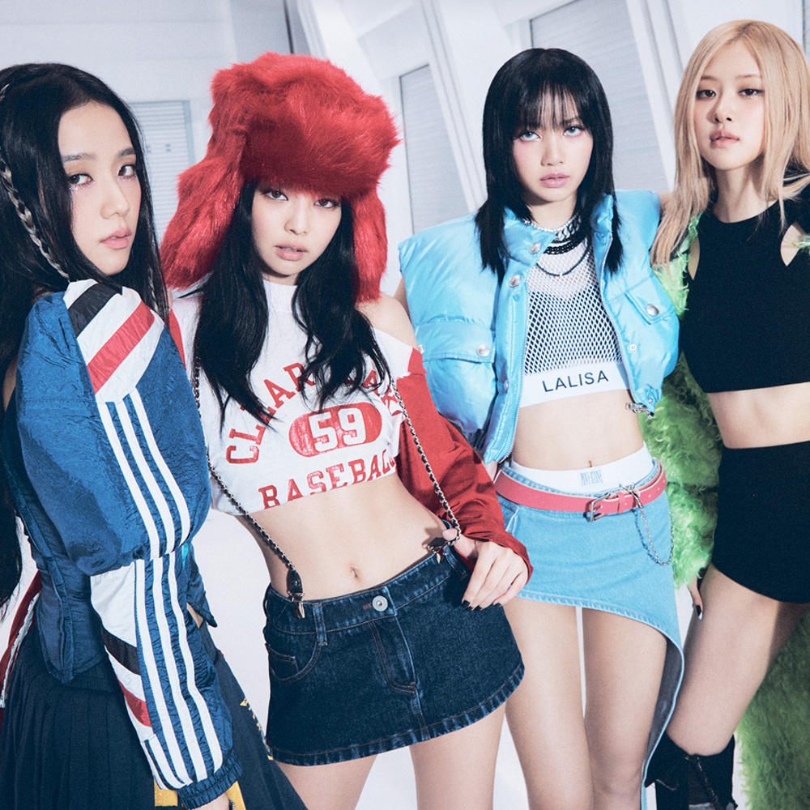

본문콘텐츠영역
On July 31, it was announced that the group's second album, Born Pink, would be released in September, preceded by a pre-release single titled "Pink Venom" on August 19 and its second single "Shut Down" were both released on September 16, 2022.
ABOUT
-
Pink Venom
"Pink Venom" is a song recorded by South Korean girl group Blackpink for their second studio album Born Pink. It was released through YG Entertainment and Interscope Records as a pre-release single on August 19, 2022.
MORE VIEW -
Shut Down
Shut Down were both released on September 16, 2022. The latter samples Niccolò Paganini's 19th century piece "La campanella", combined with hip-hop beats.
MORE VIEW
MEMBER
SINCE WE'VE NEVER LEFT
Blackpink is a South Korean girl-group formed by YG Entertainment, consisting of members Jisoo, Jennie, Rosé, and Lisa. their first number-one entries on South Korea's Gaon Digital Chart and the US Billboard World Digital Song Sales chart, respectively.
MORE VIEW-
- LISA
- Lalisa Manoban (born March 27, 1997) is a Thai rapper, singer and dancer based in South Korea.
-
- ROSE
- Roseanne Park (born February 11, 1997) is a Korean-New Zealand singer and dancer based in South Korea.
-
- JISOO
- Kim Ji-soo (born January 3, 1995) is a South Korean singer and actress.
-
- JENNIE
- Jennie Kim (born January 16, 1996) is a South Korean singer and rapper.
VIDEO
-
-

-
PINK VENOM
The album's lead single "Pink Venom" (2022) was also the first song by a Korean group to top the ARIA Singles Chart and the first song by a female Korean act to top the Billboard Global 200.
MORE VIEW
-
GALLERY
- 